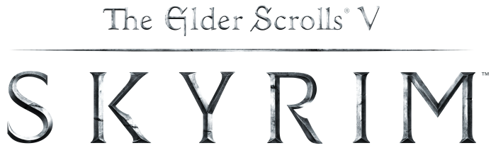
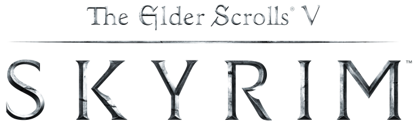

The information and materials on this website are intended to provide a very brief, necessarily cursory and incomplete, general overview
on the topic of the video-game titled "The Elder Scrolls V: Skyrim" which will be primarily referred to as "Skyrim." Much material currently
exists on Skryim, covering its history, development, technology, content and usage. You can visit any number of
wikis for
a more detailed analysis of the subject.
What is Skyrim?
Bethesda Game Studios Logo
The Elder Scrolls V: Skyrim is an open world, action role-playing video game developed by Bethesda Game Studios and published by Bethesda
Softworks, lead by Game Director and Executive Producer Todd Howard. It is the fifth installment in The Elder Scrolls action role-playing
video game series, following The Elder Scrolls IV: Oblivion. Skyrim was released on November 11, 2011, for Microsoft Windows, PlayStation
3, and Xbox 360. Three downloadable content (DLC) add-ons were released; Dawnguard, Hearthfire, and Dragonborn, which were repackaged into
The Elder Scrolls V: Skyrim - Legendary Edition, which released on June 4, 2013. Skyrim was released to critical acclaim and is often
considered among the greatest video games of all time, with reviewers noting the refined character development
and the great setting. The game shipped over seven million copies to retailers within the first week of its release, and sold over 20
million copies across all three platforms. Skyrim was also the 4th "game-of-the-year" in a row by Bethesda, giving Todd Howard the
record for most back-to-back "game-of-the-year" awards of any game designer.
Plot Summary
The player character faces off with one of the many dragons now inhabiting Skyrim.
The Elder Scrolls V: Skyrim takes place 200 years after the previous game, The Elder Scrolls IV: Oblivion; a period of time which came
to be known as the Oblivion Crisis and which ended in the fall of the traditional Imperial Dynasty (Septim Dynasty) and ultimately a
weakening of the Empire as a whole. This weakening eventually allowed the Thalmor victory in conquest over the Empire. Skyrim, a province
of The Empire which is now under Thalmor control, must enforce strict state religion policies on the natives of Skyrim, the Nords. Ulfric
Stormcloack, a prominent governor over a city in Skyrim, becomes upset by the current state of affairs in Skyrim and wishes for Skyrim to
cecede from the Empire and regain its independence. According to ancient Nord tradition, whomever slays the High-King of Skyrim will
themselves become the High-King. With this in mind, Ulfric Stormcloak challenges the current High-King and Imperial sympathizer, High-King
Torygg, to single combat and slays him. This sets the stage for the player's entrance to the game. As Skyrim is left without a High-King,
a massive civil war breaks out between the Empire and a faction which came to be known as the Stromcloaks, led by Ulfric Stromcloak, who
seek Skyrim's independence. As is the tradition set by previous Elder Scrolls titles, the player starts their journey as a prisoner of
unknown origin, this time accompanied by none other than Ulfric Stormcloak who has been captured by the empire. You two, along with other
prisoners, are about to be executed When a 1000 year old prophecy written in the Elder Scrolls is fulfilled. This prophecy, known as the
Prophecy of the Dragonborn, states:
When misrule takes its place at the eight corners of the world (Refers to the events of Elder Scrolls I)
When the Brass Tower walks and Time is reshaped (Refers to the events of Elder Scrolls II)
When the thrice-blessed fail and the Red Tower trembles (Refers to the events of Elder Scrolls III)
When the Dragonborn Ruler loses his throne, and the White Tower falls (Refers to the events of Elder Scrolls IV)
When the Snow Tower lies sundered, kingless, bleeding (Refers to the death of High-King Torygg)
The World-Eater wakes, and the Wheel turns upon the Last Dragonborn.
In the last line, "The World-Eater" refers to the Nordic dragon god, Alduin, who was forced into another dimension for 1000 years by
ancient, blessed, Nordic warriors known as "Dragonborn." These Dragonborn are blessed by the gods and given the powers of dragons so that
they may combat them. You, the player, are the last remaining Dragonborn and Skyrim's only hope to avoid total destruction at the hands of
Alduin and his dragon brethren. Just as the Dragonborn is about to be executed, the prophecy is fulfilled. Aldiun appears and the area is
laid asunder, allowing the Dragonborn and Ulfric Stormcloack time to escape. After escaping imprisonment by the Empire and the siege laid
by Alduin, the Dragonborn is left to their own devices, able to freely walk the land of Skyrim, helping anyone in need, joining various
factions, taking part in the civil war, defending Skyrim from dragons and ultimately realizing their destiny as the last remaining
Dragonborn.
of The Empire which is now under Thalmor control, must enforce strict state religion policies on the natives of Skyrim, the Nords. Ulfric
Stormcloack, a prominent governor over a city in Skyrim, becomes upset by the current state of affairs in Skyrim and wishes for Skyrim to
cecede from the Empire and regain its independence. According to ancient Nord tradition, whomever slays the High-King of Skyrim will
themselves become the High-King. With this in mind, Ulfric Stormcloak challenges the current High-King and Imperial sympathizer, High-King
Torygg, to single combat and slays him. This sets the stage for the player's entrance to the game. As Skyrim is left without a High-King,
a massive civil war breaks out between the
 
